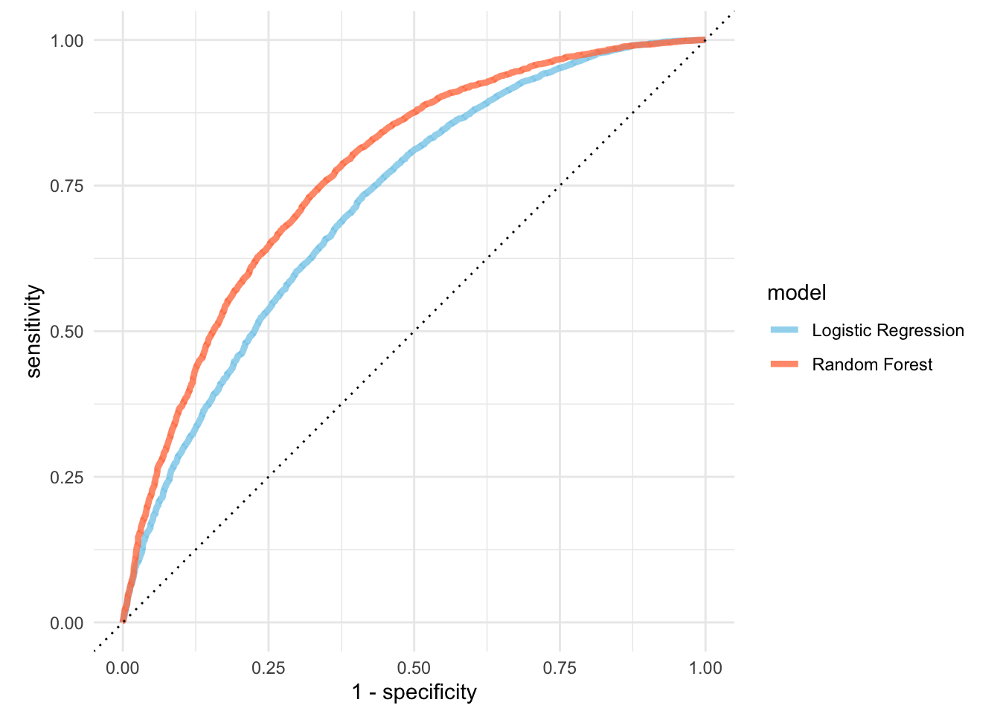

Prediction Flights Delay
Yumeng Qi & Jiying Wang
Methodology
For our project, we aim to predict the plane delay. We split the data from 2013 nyc into two subsets, train and test. We utilized logistic regression and random forest models on the dataset, and performed hyperparameter tuning for both models. The logistic regression demonstrated a notable presence of destination dummy variables in predicting delays. By comparing two models, we found that the random forest model performed better than the logistic regression model on the training set with higher sensitivity and specificity. Subsequently, we applied these models to the 2017 dataset to evaluate their performance using area under the ROC curve (AUC). As on the training dataset, the random forest model consistently outperformed the logistic regression model in terms of sensitivity, specificity, presicion, recall, and F1 score on the 2017 dataset.
Construct a Prediction Model on 2013 data set
Logistic Regression
set.seed(123)
splits <- initial_split(df_2013, strata = if_delay,prop = 3/4)
df_other <- training(splits)
df_test <- testing(splits)
val_set <- validation_split(df_other,
strata = if_delay,
prop = 0.80)
lr_mod <-
logistic_reg(penalty = tune(), mixture = 1) %>%
set_engine("glmnet")
lr_recipe <-
recipe(if_delay ~ ., data = df_other) %>%
step_date(arrival_date) %>%
step_rm(arrival_date) %>%
step_dummy(all_nominal_predictors()) %>%
step_zv(all_predictors()) %>%
step_normalize(all_predictors())
lr_workflow <-
workflow() %>%
add_model(lr_mod) %>%
add_recipe(lr_recipe)
# grid search range
lr_reg_grid <- tibble(penalty = 10^seq(-4, -1, length.out = 30))
#lr_reg_grid %>% top_n(-5) # lowest penalty values
#lr_res <-
# lr_workflow %>%
# tune_grid(val_set,
# grid = lr_reg_grid,
# control = control_grid(save_pred = TRUE),
# metrics = metric_set(roc_auc))
#saveRDS(lr_res, file = "Prediction_Env/lr_res.rds")
lr_res <- readRDS("Prediction_Env/lr_res.rds")
# select the best penalty with the highest AUC
lr_best <-
lr_res %>%
collect_metrics() %>%
arrange(desc(mean)) %>%
slice(1)
lr_res %>%
collect_metrics() %>%
ggplot(aes(x = penalty, y = mean)) +
geom_point(col = "skyblue") +
geom_line(col = "skyblue") +
ylab("Area under the ROC Curve") +
geom_vline(aes(xintercept = lr_best%>%pull(penalty) ), color = "coral")+
scale_x_log10(labels = scales::label_number())+
theme_minimal()
We selected the best-performing hyperparameters based on highest mean area under the ROC curve (AUC). We can clearly the AUC-penalty relationship from the visualization.
lr_auc <-
lr_res %>%
collect_predictions(parameters = lr_best) %>%
roc_curve(if_delay, .pred_0) %>%
mutate(model = "Logistic Regression")
#autoplot(lr_auc) + theme_minimal()
# calculate auc
#lr_res %>%
# collect_predictions(parameters = lr_best) %>%
# roc_auc(if_delay, .pred_0)
# Fit the model using the optimal hyper parameters
#lr_final <- logistic_reg(penalty = lr_best%>%pull(penalty), mixture = 1) %>%
# set_engine("glmnet") %>%
# set_mode("classification") %>%
# fit(if_delay~., data = df_2013)
#saveRDS(lr_final, file = "Prediction_Env/lr_final.rds")
lr_final <- readRDS("Prediction_Env/lr_final.rds")
# filter absolute value top 20
coeff <- tidy(lr_final) %>%
arrange(desc(abs(estimate))) %>%
filter(term != '(Intercept)') %>%
slice(1:20)
ggplot(coeff, aes(x = reorder(term,estimate), y = estimate)) +
geom_col(fill = 'skyblue') + coord_flip()+
geom_text(aes(label = round(estimate,2)))+
theme_minimal()+
theme(legend.position = "none") +
labs(title = "Feature Estimate of LASSO Regression",
x = 'Predictors',
y = 'Estimate')
#ggsave('image/lr_varplot.png')According to the plot, the top 20 absolute value estimates of Lasso Regression reveal a predominant presence of destination dummy variables.
Random Forest
cores <- parallel::detectCores()
#cores
rf_mod <-
rand_forest(mtry = tune(), min_n = tune(), trees = 1000) %>%
set_engine("ranger", num.threads = cores) %>%
set_mode("classification")
rf_recipe <-
recipe(if_delay ~ ., data = df_other) %>%
step_date(arrival_date) %>%
step_rm(arrival_date) %>%
step_dummy(all_nominal_predictors())
rf_workflow <-
workflow() %>%
add_model(rf_mod) %>%
add_recipe(rf_recipe)
#rf_res <-
# rf_workflow %>%
# tune_grid(val_set,
# grid = 25,
# control = control_grid(save_pred = TRUE),
# metrics = metric_set(roc_auc))
#saveRDS(rf_res, file = "Prediction_Env/rf_res.rds")
rf_res <- readRDS("Prediction_Env/rf_res.rds")
rf_best <-
rf_res %>%
select_best(metric = "roc_auc")
rf_auc <-
rf_res %>%
collect_predictions(parameters = rf_best) %>%
roc_curve(if_delay, .pred_0) %>%
mutate(model = "Random Forest")
## plot the comparision note this is on training set
bind_rows(rf_auc, lr_auc) %>%
ggplot(aes(x = 1 - specificity, y = sensitivity, col = model)) +
geom_path(lwd = 1.5, alpha = 0.8) +
scale_color_manual(values = c("skyblue", "coral")) +
geom_abline(lty = 3) +
coord_equal() +
theme_minimal()
By looking at the graph, we could clearly find that the random forest model performs better than the logistic regression model.
# the last model
last_rf_mod <-
rand_forest(mtry = 31, min_n = 26, trees = 1000) %>%
set_engine("ranger", num.threads = cores, importance = "impurity") %>%
set_mode("classification")
# the last workflow
last_rf_workflow <-
rf_workflow %>%
update_model(last_rf_mod)
#last_rf_fit <-
# last_rf_workflow %>%
# last_fit(splits)
#saveRDS(last_rf_fit, file = "Prediction_Env/last_rf_fit.rds")
last_rf_fit <- readRDS("Prediction_Env/last_rf_fit.rds")
# accuracy and acu
#last_rf_fit %>%
# collect_metrics()
# plot the feature importance
last_rf_fit %>%
extract_fit_parsnip() %>%
vip(num_features = 20,aesthetics = list(fill = "skyblue"))+
theme_minimal() +
labs(title = "Feature Importance of Random Forest")
#ggsave('image/rf_varplot.png')
rf_auc = last_rf_fit %>%
collect_predictions() %>%
roc_auc(if_delay, .pred_0) %>%pull(.estimate)
# last_rf_fit %>%
# collect_predictions() %>%
# roc_curve(if_delay, .pred_0) %>%
# autoplot()+ theme_minimal() On the contrary of the lasso regression, the random forest plot show that continuous variables such as airtime, pressure, distance, etc., play a more significant role in predicting delays compared to other categorical variables.
Prediction on 2017 dataset
We further employ the well-trained models on the 2017 dataset. Notably, the Random Forest model exhibited superior performance across a majority of evaluation metrics.
# pass on the recipe
df_2017_rf = rf_recipe %>%
prep() %>%
bake(new_data = df_2017)
rf_fit <-
rand_forest(mtry = 31, min_n = 26, trees = 1000) %>%
set_engine("ranger", num.threads = cores, importance = "impurity") %>%
set_mode("classification") %>%
fit(if_delay~., data = df_2017_rf)
pred_class <- predict(rf_fit,
new_data = df_2017_rf,
type = "prob")
#roc(df_2017_rf$if_delay, pred_class$.pred_0)$auc
predicted_class <- ifelse(pred_class$.pred_0 >= 0.5, 0, 1)
predicted_class = factor(predicted_class)
# 创建混淆矩阵
conf_matrix_rf <- confusionMatrix(data = predicted_class, reference = df_2017_rf$if_delay)
#conf_matrix_rf
df_2017_lr = lr_recipe %>%
prep() %>%
bake(new_data = df_2017)
# Fit the model using the optimal hyperparameters
lr_fit <- logistic_reg(penalty = 0.000127, mixture = 1) %>%
set_engine("glmnet") %>%
set_mode("classification") %>%
fit(if_delay~., data = df_2017_lr)
pred_class <- predict(lr_fit,
new_data = df_2017_lr,
type = "prob")
#roc(df_2017_lr$if_delay, pred_class$.pred_0)$auc
predicted_class <- ifelse(pred_class$.pred_0 >= 0.5, 0, 1)
predicted_class = factor(predicted_class)
# 创建混淆矩阵
conf_matrix_lr <- confusionMatrix(data = predicted_class, reference = df_2017_lr$if_delay)
# 查看混淆矩阵
#conf_matrix_lr
conf_matrix = rbind(conf_matrix_lr[["byClass"]],conf_matrix_rf[["byClass"]])
rownames(conf_matrix) = c("Logistic","Random Forrest")
#stargazer(conf_matrix, summary=FALSE, rownames=TRUE,type = 'html')| Sensitivity | Specificity | PPV | NPV | Precision | Recall | F1 | Prevalence | Detection Rate | Detection Prevalence | Balanced Accuracy | |
| LR | 0.880 | 0.470 | 0.759 | 0.673 | 0.759 | 0.880 | 0.815 | 0.655 | 0.577 | 0.760 | 0.675 |
| RF | 0.970 | 0.702 | 0.861 | 0.925 | 0.861 | 0.970 | 0.912 | 0.655 | 0.636 | 0.738 | 0.836 |